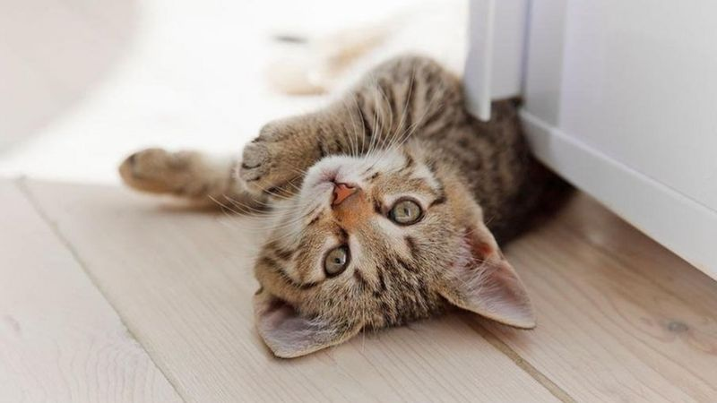

วันแมวโลก: งานวิจัยวิทยาศาสตร์แบบแมว ๆ
8 เรื่อง ที่จะทำให้คุณเข้าใจน้องเหมียวมากขึ้น
งานวิจัยว่าด้วยพฤติกรรมและสรีรวิทยาของแมว ถือเป็นหัวข้อการศึกษาค้นคว้ายอดนิยมของนักวิทยาศาสตร์จำนวนไม่น้อย
ซึ่งก็หลายคนก็น่าจะพอเดาออกว่า นักวิทยาศาสตร์เหล่านี้ต่างก็เป็นทาสแมวที่ต้องการจะเข้าใจน้องเหมียวแสนรักให้ลึกซึ้งยิ่งขึ้น
เช่นเดียวกับคุณนั่นเอง
1. ชนะใจเหมียวได้ด้วยการส่งยิ้มแบบแมว ๆ
ทีมนักวิจัยจากมหาวิทยาลัยพอร์ตสมัธและมหาวิทยาลัยซัสเซกซ์ของสหราชอาณาจักร พบว่าการส่งยิ้มในแบบของแมว
ซึ่งก็คือการกะพริบตาช้า ๆ เป็นจังหวะเนิบนาบ ช่วยกระชับความสัมพันธ์ระหว่างแมวและเจ้าของให้แน่นแฟ้นขึ้นได้เป็นอย่างดี
ทั้งยังทำให้สื่อสารกันได้อย่างเข้าอกเข้าใจกันมากขึ้นด้วย
แมวเหมียวติดกับ "กล่องลวงตา" ชอบเข้าไปนั่ง-นอน แม้ไม่ใช่รูปทรงสี่เหลี่ยม
พฤติกรรมชอบอยู่ในที่แคบของแมว หรือนิสัยชอบขดตัวนั่งนอนในบริเวณที่ถูกจำกัดไว้นั้น คนรักแมวต่างทราบกันดีและยังพากันประหลาดใจ
เมื่อเจ้าเหมียวที่บ้านชอบตรงเข้าไปอยู่แม้แต่ในเส้นวงกลมหรือกรอบสี่เหลี่ยม ซึ่งที่จริงก็เป็นเพียงเส้นที่วาดหรือแปะเอาไว้บนพื้นเท่านั้น
ไม่ใช่กล่องหรือภาชนะสามมิติที่มันชื่นชอบแต่อย่างใด
ล่าสุดโครงการนักวิทยาศาสตร์พลเมืองในสหรัฐฯ ซึ่งเจ้าของแมว 500 ราย เข้าร่วมทำการทดลองเชิงพฤติกรรมกับเจ้าเหมียวของตนจากที่บ้าน
ได้พบว่าแมวมีความเฉลียวฉลาดคล้ายมนุษย์ในเรื่องการมองเห็นรูปทรงบนพื้นผิวที่ไม่ได้มีอยู่จริง
เช่นการมองเห็นสี่เหลี่ยมจากวัตถุที่ไม่ใช่รูปทรงสี่เหลี่ยม ซึ่งการมองเห็นแบบนี้คือจินตนาการที่เกิดจากสมองเชื่อมโยงข้อมูลเก่าที่มีอยู่
ให้เข้ามาเติมเต็มแทนที่ข้อมูลภาพซึ่งขาดหายไปในสถานการณ์ปัจจุบันนั่นเอง
2. แมวบ้าน 1 ใน 10 ตัว รู้สึกวิตกกังวลเมื่อต้องห่างเจ้าของ

เรามักจะคิดว่าแมวไม่สนใจผู้คนรอบข้าง แต่นักวิทยาศาสตร์ที่มหาวิทยาลัย Federal University of Juiz de Fora ของบราซิลพบว่า
พฤติกรรมก่อปัญหาของแมวเช่นทำลายข้าวของ ขับถ่ายเรี่ยราดไม่เป็นที่เป็นทาง ส่งเสียงร้องดังรบกวนหรือก้าวร้าวผิดปกตินั้น
บางครั้งมีสาเหตุมาจากความห่างเหิน หรือถูกแยกจากเจ้าของและสิ่งคุ้นเคยเช่นของเล่นหรือสัตว์เลี้ยงร่วมบ้านเดียวกัน
โดยพบความเชื่อมโยงเกี่ยวข้องระหว่างพฤติกรรมไม่พึงประสงค์ดังกล่าวกับความสัมพันธ์ระหว่างคนและแมวที่ 13.5% ในการศึกษาแมวบ้านจำนวน 223 ตัว
3. แมวผูกพันกับคุณและรักคุณจากใจจริงได้
คนทั่วไปเชื่อว่าแมวมองมนุษย์เป็นเพียงทาสรับใช้ และไม่ได้มีความจงรักภักดีต่อเจ้าของอย่างสุดหัวใจเหมือนกับสุนัข
แต่ผลการวิจัยของมหาวิทยาลัยออริกอนสเตตในสหรัฐฯ ชี้ว่า แมวไม่ได้เป็นสัตว์ที่หัวใจเย็นชาขนาดนั้น โดยผลการทดลองดูพฤติกรรมของลูกแมว 70 ตัว
ที่เจ้าของออกจากห้องไปกลางคันระหว่างเล่นด้วยกัน แสดงให้เห็นว่าลูกแมวมี "ความผูกพันแบบรู้สึกมั่นคงปลอดภัย"
(secure attachment) ต่อเจ้าของ คล้ายกับที่ทารกรู้สึกอุ่นใจเมื่อได้อยู่กับแม่ และเหมือนกับที่สุนัขรู้สึกเชื่อใจว่าเจ้าของจะเป็นผู้ปกป้องดูแลมันได้
4. แมวรับรู้ถึงพายุฝนฟ้าคะนองล่วงหน้า

แมวและสัตว์หลายชนิดมีประสาทสัมผัสที่ไวต่อเสียงและกลิ่นในธรรมชาติยิ่งกว่ามนุษย์หลายเท่า
โดยการเปลี่ยนแปลงของความดันบรรยากาศที่ลดลงก่อนเกิดพายุ ส่งผลให้หูชั้นในของแมวรับรู้หรือแม้กระทั่งได้ยินเสียงฟ้าร้องแผ่ว ๆ
จากระยะไกลได้ นอกจากนี้ แมวอาจได้กลิ่นของก๊าซโอโซนที่เกิดจากฟ้าผ่าด้วย ซึ่งก๊าซนี้จะมีกลิ่นที่คล้ายคลึงกับโลหะ
5. "ถ้ามันพอดีตัว ฉันก็จะนั่ง" แม้กล่องลวงตาก็ไม่เว้น
บรรดาทาสแมวในโลกออนไลน์ มักกล่าวล้อเลียนพฤติกรรมชอบกล่องกระดาษและที่แคบของน้องเหมียวตัวเองว่า
"ถ้ามันพอดีตัว ฉันก็จะนั่ง" (If I fits, I sits) ซึ่งนิสัยแบบนี้ของแมวไม่มีข้อยกเว้น
แม้แต่กับเส้นวงกลมหรือกรอบสี่เหลี่ยมซึ่งคนวาดหรือแปะเอาไว้บนพื้นทั้งที่เส้นเหล่านี้ไม่ใช่กล่องหรือภาชนะสามมิติจริง ๆ

ล่าสุดนักวิจัยจากมหาวิทยาลัย City University of New York (CUNY) ยังพบว่า แมวชอบเข้าไปนั่งในกรอบลวงตาสี่เหลี่ยมแบบคานิซซา
(Kanizsa square) ซึ่งมองแล้วดูเหมือนว่ามีรูปสี่เหลี่ยมจัตุรัสปรากฏอยู่ ทั้งที่ไม่ได้มีเส้นเชื่อมต่อเป็นรูปกรอบสี่เหลี่ยมจริง ๆ อย่างไรก็ตาม
จินตนาการในสมองของแมวสามารถเชื่อมโยงข้อมูลเก่าที่มีอยู่ ให้เข้ามาเติมเต็มข้อมูลภาพซึ่งขาดหายไป จนมองเห็นเป็นกรอบสี่เหลี่ยมได้
6. แมวเป็นหนึ่งในตัวการสำคัญที่จะทำให้สัตว์ป่าสูญพันธุ์
แมวบ้านคือจอมนักล่า ซึ่งพฤติกรรมนี้ส่งผลให้จำนวนประชากรสัตว์ในธรรมชาติของบางพื้นที่ลดลงอย่างมากจนเกือบจะสูญพันธุ์
โดยผลวิจัยของมหาวิทยาลัยนอร์ทแคโรไลนาในสหรัฐฯ ชี้ว่า แมวที่เป็นสัตว์เลี้ยงจะออกล่าในรัศมี 100
เมตรรอบบ้านของมัน และฆ่าสัตว์เช่นนก หนู กระรอก สัตว์เลื้อยคลานอื่น ๆ ได้มากกว่า 2-10 เท่า เมื่อเทียบกับสัตว์ผู้ล่าในธรรมชาติที่มีขนาดตัวเท่ากัน
7. แมวกินมังสวิรัติไม่ได้
แม้จะเห็นกันอยู่ว่าแมวเป็นสัตว์กินเนื้อโดยธรรมชาติ แต่กระแสการกินมังสวิรัติเพื่อสุขภาพที่กำลังมาแรงของชาววีแกน
ทำให้เจ้าของแมวบางรายหันมาให้แมวลองกินผักและธัญพืชเป็นหลักตามไปด้วย แต่อย่างไรก็ตาม
นักวิทยาศาสตร์ได้ออกมาเตือนว่าการบังคับแมวกินมังสวิรัติจะทำให้ขาด "ทอรีน" (Taurine)
หรือโปรตีนที่ร่างกายแมวผลิตขึ้นเองไม่ได้ แมวที่ขาดทอรีนอาจตาบอด หัวใจล้มเหลว ติดเชื้อในทางเดินปัสสาวะรุนแรง
ซึ่งการเติมทอรีนสังเคราะห์ลงในอาหารมังสวิรัติของแมวก็อาจไม่ช่วยอะไรได้มากนัก
8. หนวดแมวทำให้มันเป็นนักฆ่ามือฉมัง
หนวดแมวมีอยู่ราว 24 เส้นที่ใต้จมูก แต่ก็ยังมีเส้นหนวดประเภทเดียวกันที่เหนือดวงตา คาง และด้านหลังของอุ้งเท้าหน้าอีกด้วย
หนวดแมวนั้นเชื่อมต่อกับเส้นประสาทโดยตรง ช่วยให้ประสาทสัมผัสของมันไวขึ้นระหว่างล่าเหยื่อในความมืด
ส่วนปลายของหนวดยังมีอวัยวะรับความรู้สึกพิเศษที่ใช้วัดระยะทางและกระแสอากาศ ช่วยคำนวณหาตำแหน่งทิศทางหรือแม้แต่ลักษณะผิวสัมผัสของเหยื่อ
ทำให้แมวเป็นนักล่าที่มีความแม่นยำในการสังหารสูงมากทีเดียว